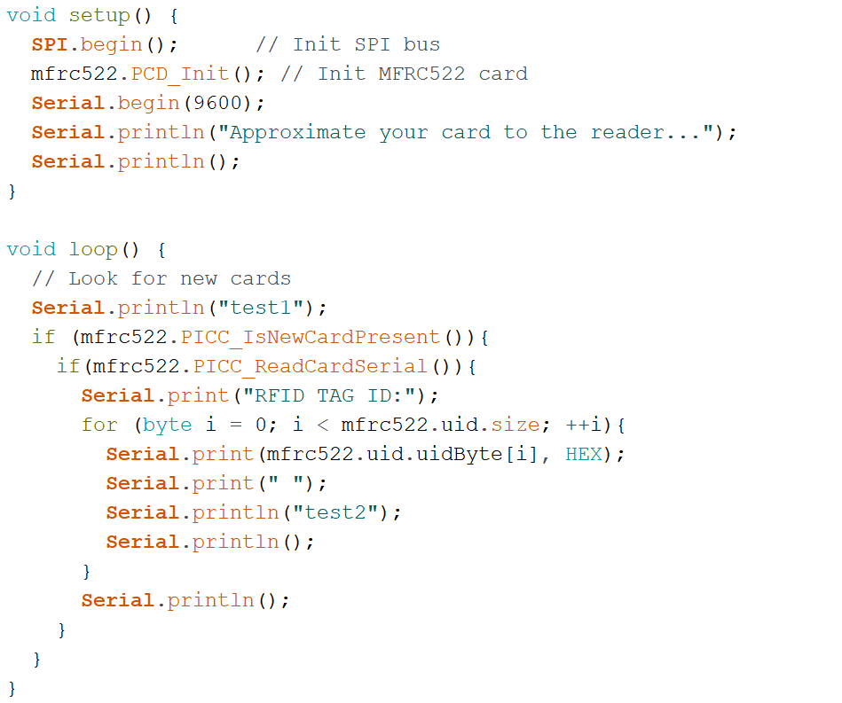
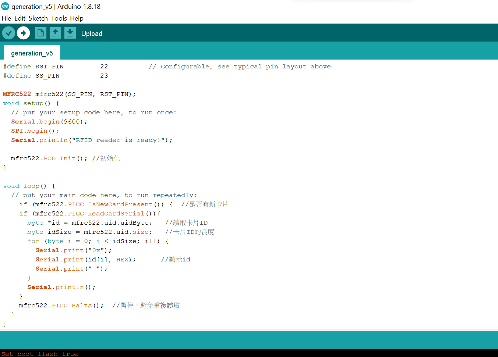
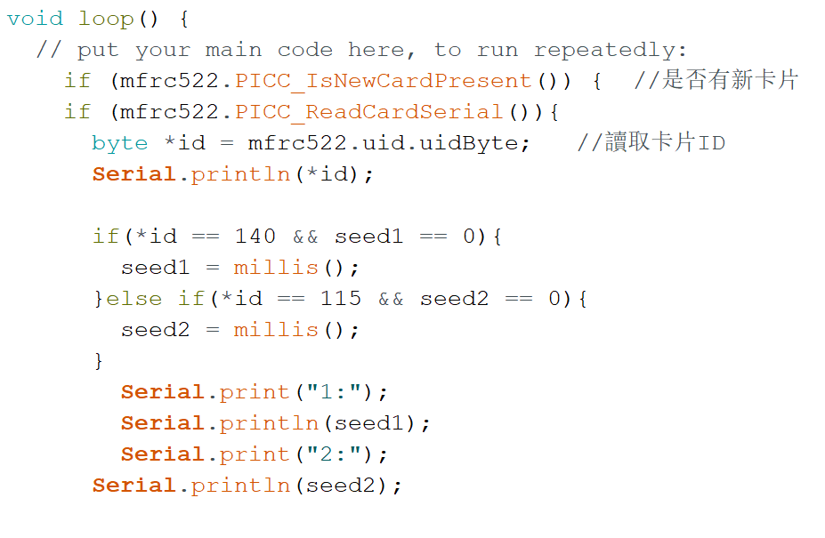
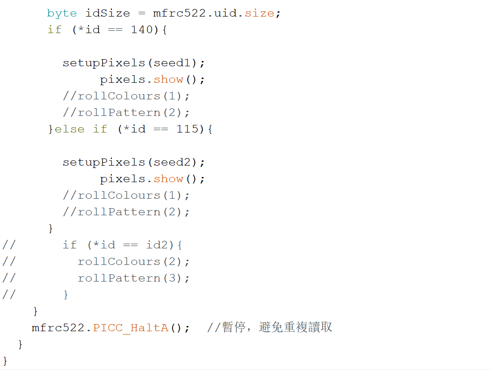
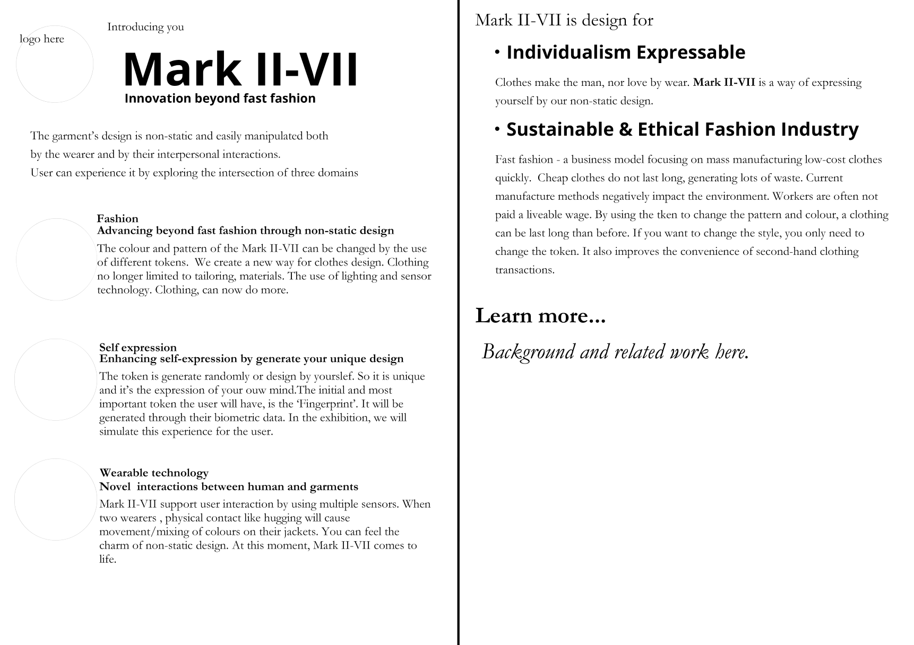
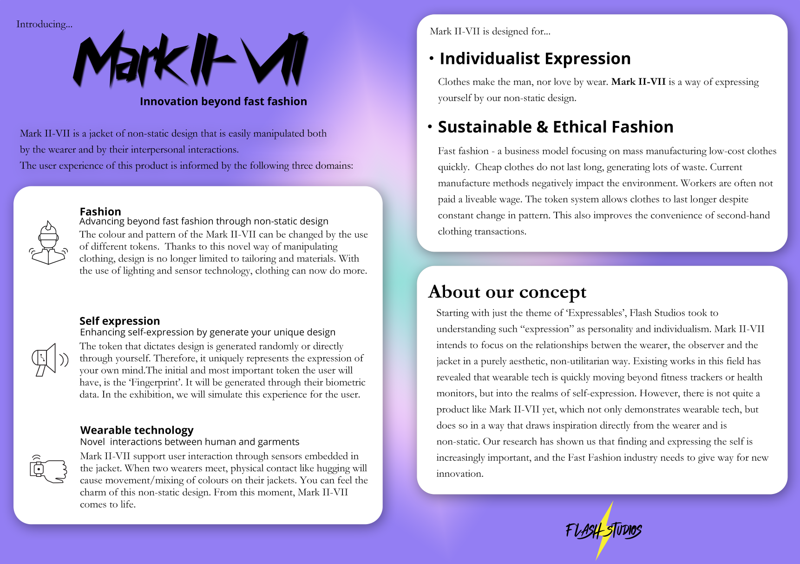

About Me
Hi, I'm Wanqi Yang. I am studying Interaction Design at the University of Queensland. It was my second
semester at UQ. DECO7385 is the most comprehensive and ambitious course I learned. As a science fiction fan,
I am glad this year's course theme allows us to think about the near-future mundane. I'm very excited to be
able to show you our team's vision for the future. In the previous pages, I believe you have understood our
project's concept, design process and final exhibition. Here, I will show you my contribution to the team.
My work
During the course, I developed RFID with Daniel. At first, I was looking for technical tutorial material to
support Daniel's work(the material can be found in Journal). When Daniel
wrote
our code based on the tutorial material, I began to join Daniel for code testing and debugging remotely. I
wrote the test code and sent it to Daniel for testing. Daniel and I iterated a total of three versions of
the code logic and finally integrated the RFID function with the LED function well (detailed records of the
iterative process can be
found in Journal)




figure 1 The first version of RFID code
figure 2 The second version of RFID code
figure 3 The third version of RFID code2
I am responsible for making supporting materials for our group to display, including poster and brochures,
and I also made
the storyboard on the Concept page.
The neon light, one of the characteristics of the cyberpunk style, fits very well with the lighting style of
our product design. Cyberpunk fits well with our design from artistic concept to style as a sci-fi theme
style full of imagination about the future. Our supporting materials well show the technological sense of
the
future style by applying the cyberpunk style (more design details can be found in Journal), so our
overall visual effects will be designed in cyber punk style, including this portfolio also contains many
cyber punk style design elements.
figure 1 The first version of poster
Photo by
Mikhail Nilov from Pexels
figure 2 The second version of poster
figure 3 The fifth version of poster
(yeah, there are still two fine-tuned versions that have not been shown here,lol)
I select some of the text from proposal and demonstration to show users the function of MarkII-VII and
explain our design concept. I also get help from Mish. I designed our brochure based on the cyberpunk style.
Because the brochure will focus on the product exhibit, I will use stylized cyber elements in it and refer
to the design style of the introduction page of technology products (more design details can be found in Journal).
figure 1 The first version of brochure cover
figure 2 The second version of brochure cover


figure 1 The first version of brochure inside
figure 2 The third version of brochure inside
figure 3 The fourth version of brochure inside
Reflection
It is challenging to work on a project with internal students as an external student. This difficulty caused
by the physical distance can only be reduced through efforts but can not be completely overcome. For the
normal situation, when I write code remotely with Daniel. As I make some changes to the code, I need to send
a file of the new version to Daniel immediately, and then he needs to synchronize my updates to the code. I
need to exchange files with Daniel more than a dozen times in one night's test, which is a meaningless time
consumption but has to be done because I cannot access the hardware. All my code has to be tested by Daniel,
which is very troublesome. As a result, even if I actively contacted Daniel, I could not participate 100%.
In the end, however, we finished the coding of RFID through remote collaboration. Our RFID tag can randomly
generate a colour pattern the first time it approaches the RFID reader. And then switch to this pattern when
you get closer again. The experience is very close to the expected experience of physical tokens. And we
only display colour combinations because LED lights only have preferred colour combinations that the naked
eye can distinguish. It is a drawback that the LED scheme must bear. If Mark II-VII get further improvements
in the future, maybe we can try to use high-resolution, smaller beads of LED, but this may lead to the
deterioration of the dress feeling of the clothing.
For the design of supporting materials, I think the final effect has achieved the desired effect. In the
exhibition, many audiences were able to associate the poster style with cyberpunk. They quickly accepted the
LED light we used on our clothes by applying this style. The audience thought the light design was very
personal, just like cyberpunk, very cool. I think the poster design is successful from this point. I
successfully used the poster to give users an early sense of the personality (self-expression) brought by
the non-mainstream art style and the sense of future brought by the sci-fi theme. But I ignored the
differences in the visual effect of neon lights on different materials, and the weakening of printing on the
lighting effects, resulting in not 100% perfect performance of the design effect. At the same time, the dark
colour palette will also make it difficult to distinguish visually when the light is dim.
Previous: Product →
Learn about our product and
experience of use
Previous: Concept →
Learn about our conceptual
design

 My Work
My Work
 Home page
Home page